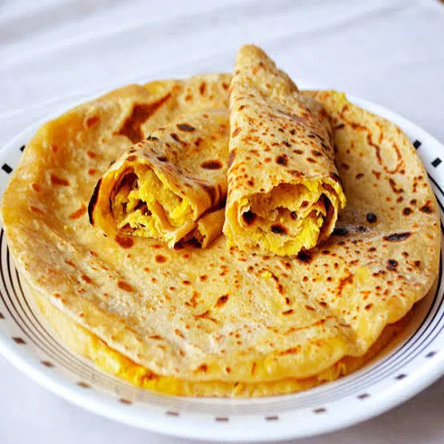

Bobbatlu, also known as Puran Poli, is a traditional sweet flatbread popular in Andhra Pradesh and other South Indian states. It's typically prepared during festivals, special occasions, and celebrations.
All-purpose flour
Semolina
Salt
Oil or ghee
Chana dal
Jaggery
Cardamom powder
Coconut and ghee
Cook chana dal: Boil chana dal until it’s soft. Blend: Drain the dal and blend it into a coarse paste. Cook with jaggery: In a pan, cook the dal paste with jaggery until the mixture thickens and the jaggery dissolves completely. Add cardamom powder and coconut if using. Allow it to cool. Prepare the Dough: Mix flour: Combine all-purpose flour, semolina (if using), salt, and oil or ghee. Knead: Gradually add water and knead into a soft, smooth dough. Let it rest for at least 30 minutes. Assemble Bobbatlu: Divide: Divide the dough and filling into equal portions. Roll: Roll out a small portion of dough into a small circle, place a portion of the filling in the center, and fold the edges over the filling to seal. Flatten: Gently roll out the filled dough into a flatbread, being careful not to let the filling leak out. Cook: Heat a griddle: Place the rolled-out bobbatlu on a hot griddle or tawa. Cook: Cook on medium heat, applying a little ghee or oil on both sides, until golden brown and cooked through.